|
|
< Day Day Up > |
|
The master method provides a "cookbook" method for solving recurrences of the form
where a ≥ 1 and b > 1 are constants and f (n) is an asymptotically positive function. The master method requires memorization of three cases, but then the solution of many recurrences can be determined quite easily, often without pencil and paper.
The recurrence (4.5) describes the running time of an algorithm that divides a problem of size n into a subproblems, each of size n/b, where a and b are positive constants. The a subproblems are solved recursively, each in time T (n/b). The cost of dividing the problem and combining the results of the subproblems is described by the function f (n). (That is, using the notation from Section 2.3.2, f(n) = D(n)+C(n).) For example, the recurrence arising from the MERGE-SORT procedure has a = 2, b = 2, and f (n) = Θ(n).
As a matter of technical correctness, the recurrence isn't actually well defined because n/b might not be an integer. Replacing each of the a terms T (n/b) with either T (⌊n/b⌋) or T (⌈n/b⌉) doesn't affect the asymptotic behavior of the recurrence, however. (We'll prove this in the next section.) We normally find it convenient, therefore, to omit the floor and ceiling functions when writing divide-and-conquer recurrences of this form.
The master method depends on the following theorem.
Let a ≥ 1 and b > 1 be constants, let f (n) be a function, and let T (n) be defined on the nonnegative integers by the recurrence
T(n) = aT(n/b) + f(n),
where we interpret n/b to mean either ⌊n/b⌋ or ⌈n/b⌉. Then T (n) can be bounded asymptotically as follows.
If 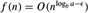 for some constant ∈ > 0, then 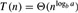
If 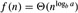, then 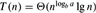.
If 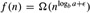 for some constant ∈ > 0, and if a f (n/b) ≤ cf (n) for some constant c < 1 and all sufficiently large n, then T (n) = Θ(f (n)).
Before applying the master theorem to some examples, let's spend a moment trying to understand what it says. In each of the three cases, we are comparing the function f (n) with the function 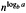. Intuitively, the solution to the recurrence is determined by the larger of the two functions. If, as in case 1, the function is the larger, then the solution is 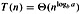. If, as in case 3, the function f (n) is the larger, then the solution is T (n) = Θ(f (n)). If, as in case 2, the two functions are the same size, we multiply by a logarithmic factor, and the solution is 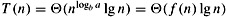.
Beyond this intuition, there are some technicalities that must be understood. In the first case, not only must f (n) be smaller than 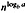, it must be polynomially smaller. That is, f (n) must be asymptotically smaller than 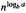 by a factor of n∈ for some constant ∈ > 0. In the third case, not only must f (n) be larger than 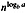, it must be polynomially larger and in addition satisfy the "regularity" condition that af (n/b) ≤ cf(n). This condition is satisfied by most of the polynomially bounded functions that we shall encounter.
It is important to realize that the three cases do not cover all the possibilities for f (n). There is a gap between cases 1 and 2 when f (n) is smaller than 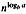 but not polynomially smaller. Similarly, there is a gap between cases 2 and 3 when f (n) is larger than but not polynomially larger. If the function f (n) falls into one of these gaps, or if the regularity condition in case 3 fails to hold, the master method cannot be used to solve the recurrence.
To use the master method, we simply determine which case (if any) of the master theorem applies and write down the answer.
As a first example, consider
T (n) = 9T(n/3) + n.
For this recurrence, we have a = 9, b = 3, f (n) = n, and thus we have that 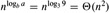. Since 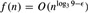, where ∈ = 1, we can apply case 1 of the master theorem and conclude that the solution is T (n) = Θ(n2).
Now consider
T (n) = T (2n/3) + 1,
in which a = 1, b = 3/2, f (n) = 1, and 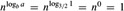. Case 2 applies, since 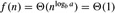, and thus the solution to the recurrence is T(n) = Θ(lg n).
For the recurrence
T(n) = 3T(n/4) + n lg n,
we have a = 3, b = 4, f (n) = n lg n, and 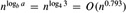. Since
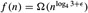, where ∈ ≈ 0.2, case 3 applies if we can show that the regularity condition holds for f (n). For sufficiently large n, af (n/b) = 3(n/4)lg(n/4) ≤ (3/4)n lg n = cf (n) for c = 3/4. Consequently, by case 3, the solution to the recurrence is T(n) = Θ(nlg n).
The master method does not apply to the recurrence
T(n) = 2T(n/2) + n lg n,
even though it has the proper form: a = 2, b = 2, f(n) = n lg n, and 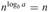. It might seem that case 3 should apply, since f (n) = n lg n is asymptotically larger than 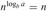. The problem is that it is not polynomially larger. The ratio 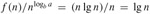 is asymptotically less than n∈ for any positive constant ∈. Consequently, the recurrence falls into the gap between case 2 and case 3. (See Exercise 4.4-2 for a solution.)
Use the master method to give tight asymptotic bounds for the following recurrences.
T (n) = 4T(n/2) + n.
T (n) = 4T(n/2) + n2.
T (n) = 4T(n/2) + n3.
The recurrence T(n) = 7T (n/2)+n2 describes the running time of an algorithm A. A competing algorithm A′ has a running time of T′(n) = aT′(n/4) + n2. What is the largest integer value for a such that A′ is asymptotically faster than A?
Use the master method to show that the solution to the binary-search recurrence T(n) = T (n/2) + Θ(1) is T(n) = Θ(lg n). (See Exercise 2.3-5 for a description of binary search.)
Can the master method be applied to the recurrence T (n) = 4T(n/2) + n2 lg n? Why or why not? Give an asymptotic upper bound for this recurrence.
Consider the regularity condition af (n/b) ≤ cf(n) for some constant c < 1, which is part of case 3 of the master theorem. Give an example of constants a ≥ 1 and b > 1 and a function f (n) that satisfies all the conditions in case 3 of the master theorem except the regularity condition.
|
|
< Day Day Up > |
|